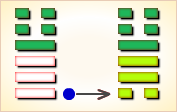
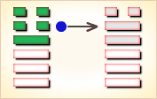

周易第34卦_大壮卦(雷天大壮)_震上乾下
如有疑问互相交流，微信：470283584
周易第34卦详解
大壮卦原文
大壮。利贞。
象曰：雷在天上，大壮。君子以非礼弗履。
白话文解释
大壮卦：吉利的卜问。
《象辞》说：本卦上卦为震，震为雷，下卦为乾，乾为天，天上鸣雷是大壮的卦象。君子观此卦象，以迅雷可畏，礼法森严，从而畏威知惧，唯礼是遵。
《断易天机》解
大壮卦震上乾下，为坤宫四世卦。此卦中的大壮表示壮大，阳隆盛，象征君子，君子壮大当然亨通。
北宋易学家邵雍解
光明正大，强盛壮大；容忍和气，切忌冲动。
得此卦者，运势过于强盛，宜心平气和，谨慎行事，否则必生过失。
台湾国学大儒傅佩荣解
时运：成名不难，不可骄傲。
财运：得价即售，不可过贪。
家宅：小心防火；相敬如宾。
身体：保养脚部。
传统解卦
这个卦是异卦（下乾上震）相叠。震为雷；乾为天。乾刚震动。天鸣雷，云雷滚，声势宏大，阳气盛壮，万物生长。刚壮有力故曰壮。大而且壮，故名大壮。四阳壮盛，积极而有所作为，上正下正，标正影直。
大象：雷声响亮，光明天际，为正大光明之象，又为强烈地动之象，为六冲卦之一。
运势：运势虽强，但已届极盛之时，宜心平气和，否则反招失败，须知物极必反。
事业：处世凭智不凭力，有勇更有谋，切忌蛮干，该守不守，自取其凶。不可逞强，否则自取凶险。对小人应有防犯，尤其不得忽视小人的奸诈。对事业应勇往直前，但切忌冒进。
经商：处在高涨阶段，形势很好。但决不可逞强，更不可妄动，应主动增强与他人的合作。提高警惕，认识物极必反的道理，做事业衰退的准备。
求名：务必注意妥善地运用自己的力量，不可自恃刚健强壮而冒进，尤其不可自负。适当发挥自己的才干，加上外力的援助，必有所作为。
婚恋：决不可因自己条件好而高傲。切勿错过好姻缘。
决策：强健适中，不可过分消耗自己的力量。在事业顺利的时刻，尤其不可妄动。更应注意，很可能已经处于进退维谷的状态，务必自保待机，及早有所准备。
台湾张铭仁解卦
大壮：表示天上打雷、声势浩大，行动迅速、积极之象。 此卦一般以吉处藏凶来论。因为对人、对事最忌冲动。此卦有过于不理性冲动之象，容易犯错。尤其有血光之祸，被人殴打、伤害之意。得此卦，凡事再三思为吉。
解释：声势浩荡。
特性：爱冒险，领导欲强，喜怒易形于色，不喜欢太平淡安定的工作生活。金钱支出大方，朋友人缘不错。
运势：刚强过盛者，若不思正与顺，则有躁动之害耳。虽运势强大，时至当盛之期，但忌血气方刚。处事欠思虑而遭破运，宜力持和平、顺气，勿得罪人，否则会因此而招来失败，切勿贪妄。
家运：已壮大且富有，但亦有似成而空之感。
疾病：生平少病者遇此卦则不利，注意急性呼吸道感染和脑疾等。
胎孕：子母有难非喜。
子女：儿女有自视太高，目中无人之情。
周转：勿再三借贷，如此反而不利。
买卖：可成功与获大利，但往后要小心，有反遭不利之情况。
等人：迟来。
寻人：为斗气而出走，若寻找途中不见，则难查下落，东方或西北方。
失物：不能取回。
外出：慎重外出，不可莽撞，否则不吉利。
考试：有好成绩，但勿太骄傲。
诉讼：忌与人斗气，宜和解收场，否则两败俱伤。
求事：可顺利，勿太刚强行事。
改行：可，不过勿太勉强。
开业：吉利。
周易第34卦初九爻详解
初九爻辞
初九。壮于趾，征凶，有孚。
象曰：壮于趾，其孚穷也。
白话文解释
初九：伤于脚趾。筮遇此爻，出征则凶，但尚有收获。
《象辞》说：自恃兵强，侵略他国，虽有收获，但信用扫地。
北宋易学家邵雍解
凶：得此爻者，会有争诉，动则凶，须防足疾。做官的须防小人的谗言而受辱。
台湾国学大儒傅佩荣解
时运：有勇无谋，功名必卑。
财运：不能慎思，必遭损失。
家宅：不可迁移；防女足疾。
身体：慎择良医。
初九变卦

初九爻动变得周易第32卦：雷风恒。这个卦是异卦（下巽上震）相叠。震为男、为雷；巽为女、为风。震刚在上，巽柔在下。刚上柔下，造化有常，相互助长。阴阳相应，常情，故称为恒。
周易第34卦九二爻详解
九二爻辞
九二。贞吉。
象曰：九二贞吉，以中也。
白话文解释
九二：卜问得吉兆。
《象辞》说：九二爻辞讲贞正吉利，因为九二之爻居下卦中位，像人守中正之道。
北宋易学家邵雍解
吉：得此爻者，营谋得意。做官的中庸处事，心中无愧。
台湾国学大儒傅佩荣解
时运：中庸处世，受到肯定。
财运：货价合宜，自然获利。
家宅：地位适中；婚姻吉祥。
身体：滋补得宜。
九二变卦
九二爻动变得周易第55卦：雷火丰。这个卦是异卦（下离上震）相叠，电闪雷鸣，成就巨大，喻达到顶峰，如日中天。告戒：务必注意事物向相反方面发展，盛衰无常，不可不警惕。
周易第34卦九三爻详解
九三爻辞
九三。小人用壮，君子用罔，贞厉。羝羊触藩，羸其角。
象曰：小人用壮，君子罔也。
白话文解释
九三：小人捕兽凭气力，君子捕兽靠网围。卜问得险兆。公羊以角撞藩，结果被篱笆卡住。
《象辞》说：小人捕兽凭气力，君子捕兽靠网围。
北宋易学家邵雍解
凶：得此爻者，或有官司之事，或家中有丧，人财不利。做官的多祸难，进退难安。
台湾国学大儒傅佩荣解
时运：临事而惧，谦退受益。
财运：不必垄断，否则大耗。
家宅：过高易震；夫妻反目。
身体：血气过刚，防有不测。
九三变卦
九三爻动变得周易第54卦：雷泽归妹。这个卦是异卦（下兑上震）相叠。震为动、为长男；兑为悦、为少女。以少女从长男，产生爱慕之情，有婚姻之动，有嫁女之象，故称归妹。
周易第34卦九四爻详解
九四爻辞
九四。贞吉，悔亡；藩决不羸，壮于大舆之輹。
象曰：藩决不羸，尚往也。
白话文解释
九四：卜问得吉兆，没有悔恨。因为公羊冲决篱笆，摆脱了拘系，但又被车轮撞伤，不能乱冲乱撞了。
《象辞》说：冲决篱笆，摆脱掏系，恐其冲撞别处。
北宋易学家邵雍解
吉：得此爻者，常人得福，久静者必动，动则吉。做官的闲职者复职，进取如意。
台湾国学大儒傅佩荣解
时运：前途无阻，功名亦显。
财运：满载而归，何乐不为。
家宅：赶快整修；不是佳偶。
身体：恐有不测。
九四变卦
九四爻动变得周易第11卦：地天泰。这个卦是异卦（下乾上坤）相叠，乾为天，为阳；坤为地，为阴，阴阳交感，上下互通，天地相交，万物纷纭。反之则凶，万事万物，皆对立，转化，盛极必衰，衰而转盛，故应时而变者泰（通）。
周易第34卦六五爻详解
六五爻辞
六五。丧羊于易，无悔。
象曰：丧羊于易，位不当也。
白话文解释
六五：丧羊于狄。筮遇此爻，没有大的灾祸。
《象辞》说：丧羊于狄，因为六五阴爻而居处阳位，是所处不当，像人所处环境不适当，将蒙受损失。
北宋易学家邵雍解
凶：得此爻者，一筹莫展，不能得利，病者有丧身之兆。做官的会荒于政务。
台湾国学大儒傅佩荣解
时运：亡羊补牢，晚年有望。
财运：恐有小失，尚无大碍。
家宅：不宜畜牧；婚礼不成。
身体：不吉之象。
六五变卦

六五爻动变得周易第43卦：泽天夬。这个卦是异卦（下乾上兑）相叠。乾为天为健；兑为泽为悦。泽气上升，决注成雨，雨施大地，滋润万物。五阳去一阴，去之不难，决（去之意）即可，故名为夬（guài），夬即决。
周易第34卦上六爻详解
上六爻辞
上六。羝羊触藩，不能退，不能遂，无攸利。艰则吉。
象曰：不能退，不能遂，不详也；艰则吉，咎不长也。
白话文解释
上六：羊角插进了篱笆，退不了，进不了，处境不利。但是，目前虽处于艰难之中，最终可以化解逢吉。
《象辞》说：不能退，不能进，陷入进退维谷之中，这是遭逢不祥。虽陷入艰难之中，最终可以化解逢吉，是说灾难不会长久。
北宋易学家邵雍解
平：得此爻者，进退两难，多是非争诉，宜守常。做官的宜退不宜进，恐有遭贬之危。
台湾国学大儒傅佩荣解
时运：早些退休，以免后悔。
财运：原想发财，难以保本。
家宅：艰难自守；先苦后乐。
身体：进退两难。
上六变卦
上六爻动变得周易第14卦：火天大有。这个卦是异卦（下乾上离）相叠。上卦为离，为火；下卦为乾，为天。火在天上，普照万物，万民归顺，顺天依时，大有所成。